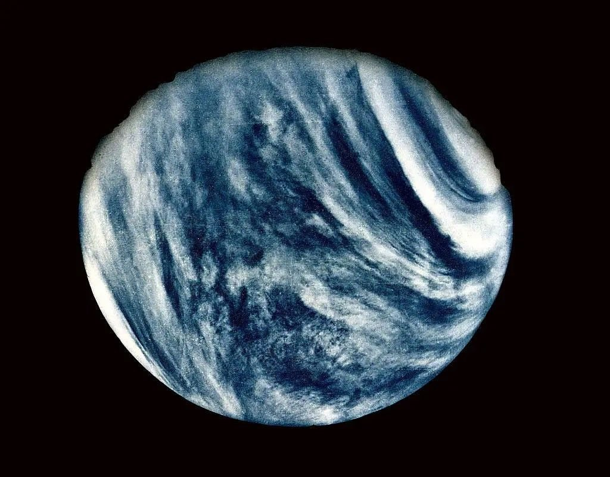
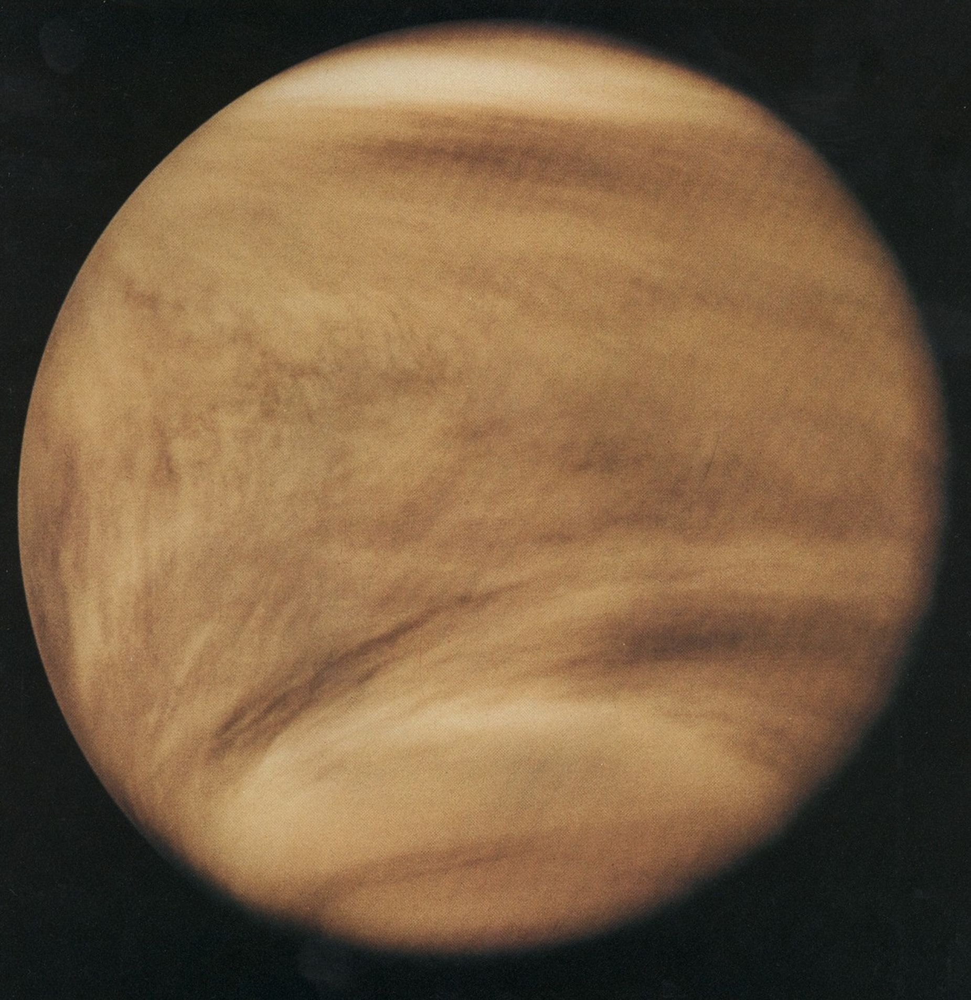
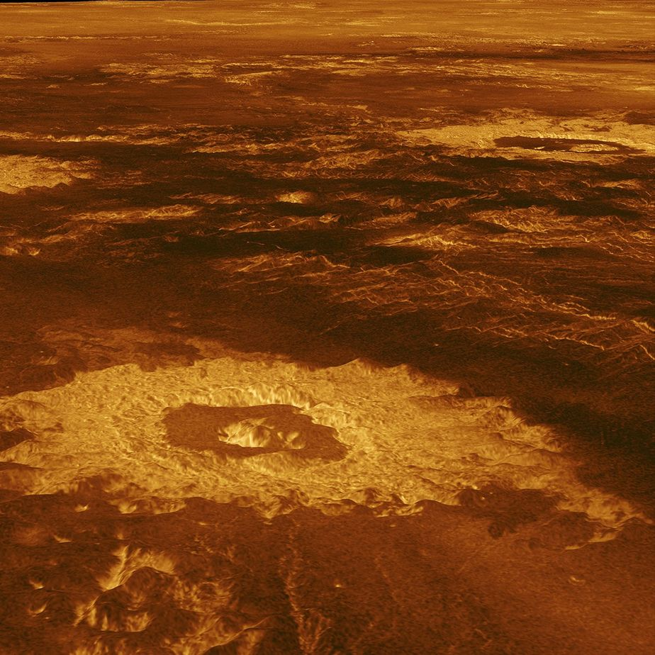
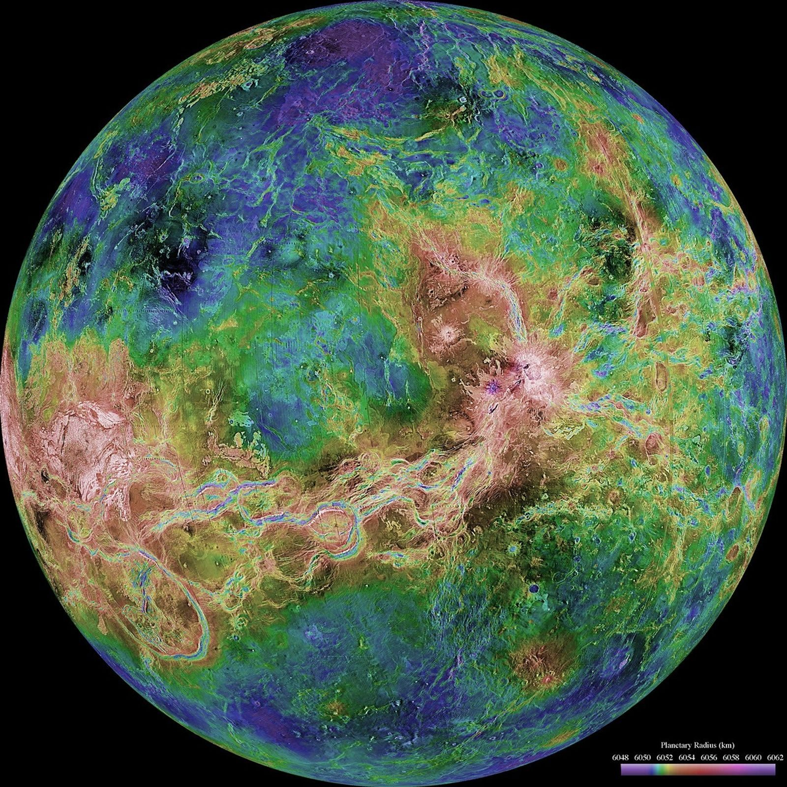
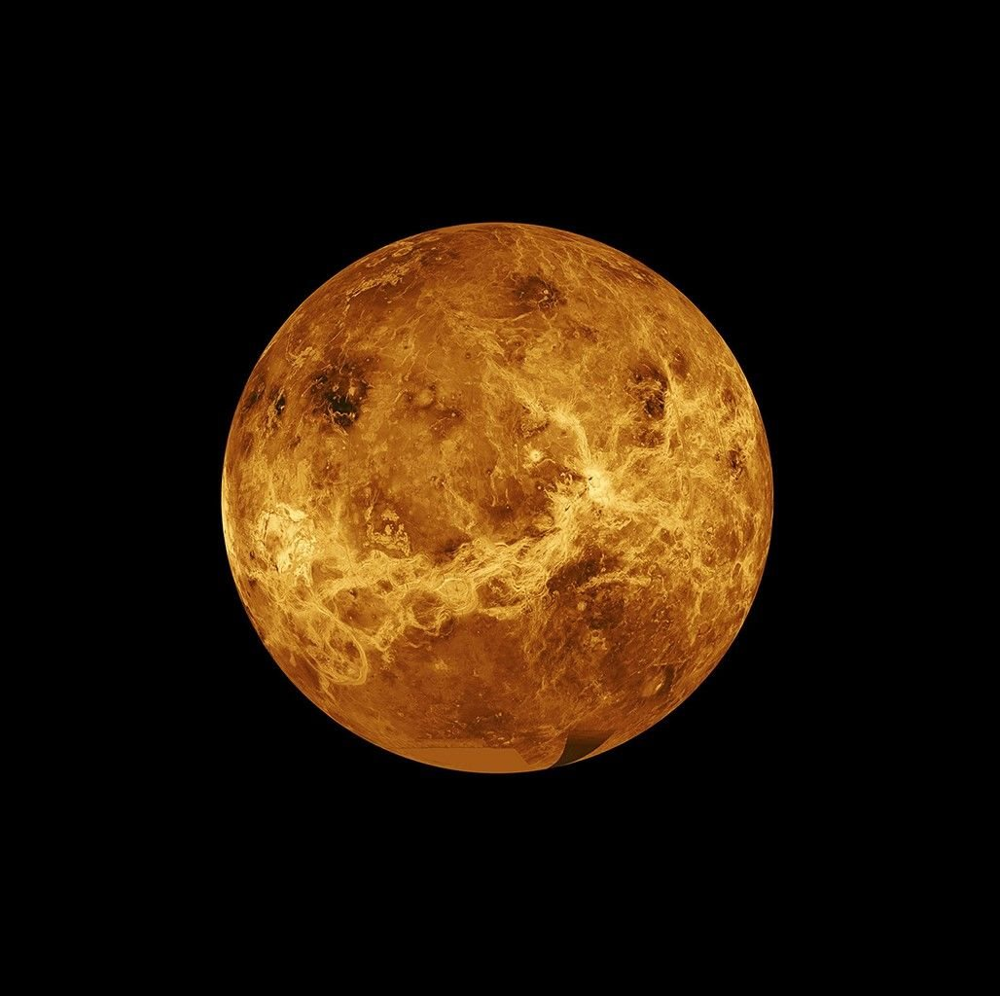

Venus Hides Under Clouds
A bright planet with big surprises
A bright planet with big surprises
Look near sunrise or sunset. A bright dot may shine in the sky. That is Venus, our glowing planet neighbor.

Venus is almost Earth's size. But Venus is not like home. Earth is cool and wet. Venus is hot, hot, hot!

Venus is the hottest planet. Its ground is so hot that lead would melt. No puddles can stay there.

Why so hot? Venus wears a thick blanket of air. The blanket traps heat and presses down hard.

Clouds cover Venus all around. They hide the ground, like a curtain wrapped around the whole planet.

Robot spacecraft use radar to peek through the clouds. Peek! Underneath, Venus has rocky land.

The hidden land has craters, mountains, and many volcano places. Venus is quiet in pictures, but its rocks tell stories.

A day on Venus is longer than a year on Venus. Venus spins very, very slowly.

Venus even spins backward. If we could watch safely, the Sun would rise in the west and set in the east.
People do not walk on Venus. Robot explorers visit for us. Goodbye, bright Venus, with clouds hiding a hot, rocky world.